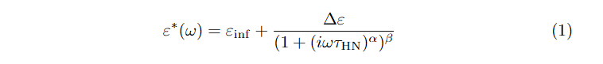
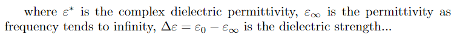
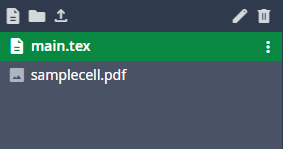
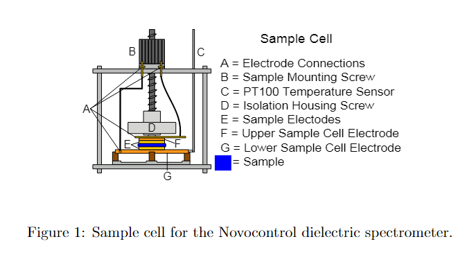
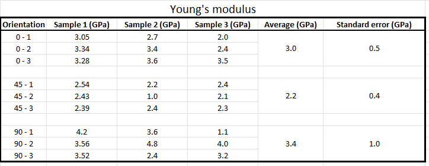
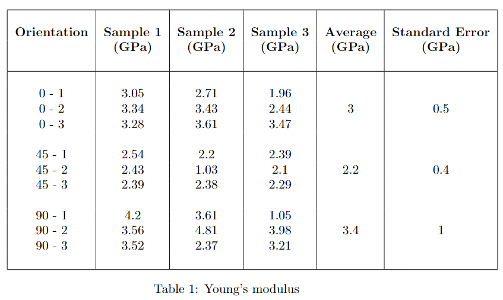
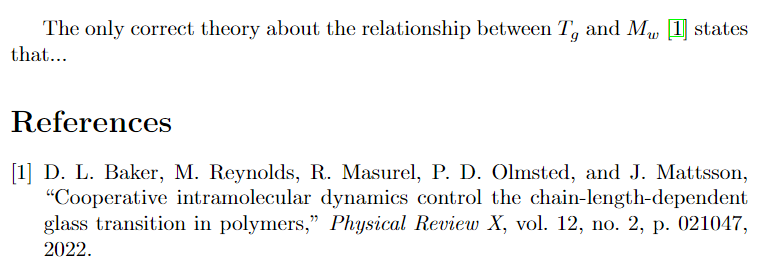
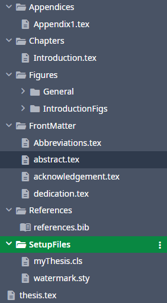

When 'Blank Project' is selected, Overleaf will open the editor with the following code added in (I called my project 'TestBlankTemplate'):
\documentclass{article}\usepackage{graphicx}% Required for inserting images\title{TestBlankTemplate}\author{Your Name}\date{February 2025}\begin{document}\maketitle\section{Introduction}\end{document}
All \(\LaTeX\) functions are prefaced by backslashes. The main, required argument goes in {} and optional arguments go in []: \examplefunction[option1, option2]{mainarg}
\documentclass sets the... class of the...document. There are many prebuilt examples. We can use parameters passed to this function to change various ways in which the document is formatted overall, for example, if we want the document to be a two columned article: \documentclass[twocolumn]{article}
The \usepackage function is used to load in extra functionality (like import in Python). In this case, \usepackage{graphicx} loads the `graphicx' package (so that images can be rendered) into the scope of the current document.
\title sets the document title (...).
\author sets the document author (you're seeing how straightforward this is, right?).
\date sets the date. If you don't want a date to be displayed, call the function with an empty argument: \date{}.
The main text of the document needs to go in between the \begin{document} and \end{document} function calls.
We can use the \section function to denote sections within the document (and \subsection and \subsubsection).
Comments are denoted by % - text after a % on a particular line will not be compiled by $LaTeX, so you can use these to write notes about the function of a particular line, for example.
Equations
To add an equation, we need to create an 'equation' environment. The following is the code you would use to write the Havriliak-Negami function:
The \begin{equation} and \end{equation} lines denote the beginning and end of the equation environment.
We can type various symbols by using a backslash and the symbol name (there are loads of 'symbol lists' online and Overleaf has a 'symbol palette'). For example, β would be \beta.
Subscripts and superscripts are rendered using the _ and ^ symbols. If there are more than one symbol/letter to go in the superscript then you should encase the super-/subscripts in curly braces. For example, to write alpha, subscript 'n', superscript 'tau' you would write: \alpha_{n}^{3\tau}.
\frac{}{} allows us to display fractions as \(\frac{a}{b}\) rather than \(a/b\). Numerator goes in the first set of braces, denominator goes in the second.
We can use \mathrm{} to remove the 'mathsy formatting' for letters (i.e. in this case we don't want 'HN' to be italicised).
If you want your equation to be 'un-numbered' then you can enclose the equation in \begin{equation*} and \end{equation*} instead.
This equation renders as:

and we can refer to it in the main text using its label:
Equation \ref{eq:HN} is the Havriliak-Negami equation.
Inline mathematical symbols
We often need to add 'inline' maths in the main text (to explain what the symbols mean in an equation, for example). You can invoke an inline equation environment by enclosing the things you want to render in $$. For example, if we wanted to explain the symbols in our Havriliak-Negami equation:
where $\varepsilon^{*}$ is the complex dielectric permittivity,
$\varepsilon_{\infty}$ is the permittivity as frequency tends to infinity,
$\Delta\varepsilon=\varepsilon_0-\varepsilon_{\infty}$ is the dielectric strength...

Full-size brackets
Let's say we wanted to put brackets around the fraction in our Havriliak-Negami equation. If we just add brackets like this:
The first thing we need to do is upload our figure to our Overleaf project. On the left hand side of the screen you should see a box with 'main.tex' in. This is our document file. We can upload a figure by dragging and dropping the file into this box, or we can use the upload button (little up-arrow). Here, I've uploaded a figure called 'samplecell.pdf':

To add this into our document, we need to make a 'figure' environment, and load our figure:
\begin{figure}[]
\centering\includegraphics[width=0.8\linewidth]{samplecell.pdf}\caption{Sample cell for the Novocontrol dielectric spectrometer.}\label{fig:sample_cell}\end{figure}
The \begin{figure} and \end{figure} lines denote the beginning and end of the figure environment. We can use the square brackets after the \begin{figure} call to specify the priority that \(\LaTeX\) should use when positioning the figure on the page. For example, if we use \begin{figure}[htbp], this means, first, \(\LaTeX\) will try to place the figure 'here' (i.e. the position in the text where the figure is called), and then the 'top', 'bottom', and finally a whole 'page'.
\centering centers the figure relative to the page.
\includegraphics loads the figure itself (main argument in {}). Here, we have used an optional argument to specify that the width of the figure should be 0.8 times the \linewidth parameter, which sets the maximum length of a line. By setting the width relative to \linewidth, the figure will automatically scale if we, for example, decide to change the margins of the document.
\caption sets the text which will be displayed under the figure. This will display as "Figure X: Caption Text", where X is the figure number relative to the other figures in the document. This means you don't have to worry about numbering figures!
\label allows us to refer to this figure in the text.
The resulting figure looks like this:

To refer to the figure in the main text, we use the \ref command. For example:
Figure \ref{fig:sample_cell} is a schematic of the sample cell for the Novocontrol dielectric spectrometer.
Tables
To add a table, we can use the - you guessed it - 'Table' environment:
- The \begin{table} and \end{table} lines denote the beginning and end of the table environment. We can use the square brackets after the \begin{table} call to specify the priority that \(\LaTeX\) should use when positioning the table on the page. For example, if we use \begin{table}[htbp], this means, first, \(\LaTeX\) will try to place the table 'here' (i.e. the position in the text where the table is called), and then the 'top', 'bottom', and finally a whole 'page'.
- \centering centers the table relative to the page.
- The actual table is rendered within the 'tabular' block (between \begin{tabular} and \end{tabular}). The second set of {} after \begin{tabular} are used to specify the number of columns and how the text within those columns is aligned e.g. {c|c} means two columns with a single vertical line between with the text centered in each column.
- Values are added to the table using & between columns. The end of a row is denoted by \\
- \caption sets the text which will be displayed under the table. This will display as "Table X: Caption Text", where X is the table number relative to the other tables in the document.
- \label allows us to refer to this table in the text.
Let's imagine we have a set of Young's moduli data for some composite samples and we'd like to add this to a report:

So, we need a table with 6 columns and fill it up with data. We'd also like to:
Have the column headings in bold.
Have a horzontal line separating the column headings from the data.
Have the 'Average' and 'Standard Error' values for each 'orientation' span 3 rows (to centre them within the three rows that they refer to).
\begin{tabular}{|c|c|c|c|c|c|} says that we want 6 columns, separated by vertical lines, with the contents centred. Note we've also used vertical lines on the outsides of the columns so that the table is 'boxed'.
\hline draws a horizontal line across the span of the table (we can use these to 'enclose' tables with a top/bottom too, as I have here).
\textbf{} makes the text within the braces bold.
Values in the table are separated with & (if \(n\) is the number of columns, there will always be \(n-1\)&s on any particular row). If we want to leave a row entry empty, we just don't put anything between the & (so, we can leave a whole line empty by doing &&&&&\\ )
Rows are terminated with \\ (line break).
We can use the \multirow package (\usepackage{multirow} at the beginning of the document) to specify that a value should span over multiple rows (3 in our case). The value in the first set of braces indicates the number of rows to span over, the second value specifies what the width of the contents should be (use * to indicate that the value should span to the pre-defined width of the column), and the third is the text to actually render. So, \multirow{3}{*}{0.5} would render 0.5, spanning 3 rows, using all the available width of the column.
The result looks like this:

References
Warning
I (Dan) don't use 'reference managers' at all. It's totally possible that your reference manager can produce a .bib that you can use in your \(\LaTeX\) documents, and if you discover that it does then it would be great if you could write some instructions for doing that, and we can add them here too!
References for \(\LaTeX\) are managed/compiled using 'BibTeX' and references are stored in '.bib' files.
\bibiographystyle sets the style of the bibliography (...) and \bibliography loads the actual references (this won't work without a style).
We can now refer to our paper using its 'handle': the bit of text just after the @article definition - in this case, 'baker2022cooperative':
The only correct theory about the relationship between $T_{g}$ and $M_{w}$\cite{baker2022cooperative} states that...

Leeds Thesis Template
In this section, I'm going to explain how to get started with the 'Leeds Thesis Template' that has been going around since 2003 or so. I won't explain literally every command but this should allow you to start writing...
To start a new project using the Leeds Thesis Template:
Download the latest .zip of the template from our Teams space (General -> Files)
Drag .zip into the window / click to browse your PC for the .zip.
Project Structure
thesis.tex is the 'entry point' for the thesis. You could, technically, add all your text / images etc into this file and have your entire thesis in one big file, but that would be a complete nightmare...
Classes\myThesis.cls is the custom document class for this template (it is loaded at the top of thesis.tex: \documentclass[twoside,12pt]{Classes/myThesis}). This class defines custom environments for the Acknowledgements, Abstract, etc and also sets the spacing for the title page, loads packages and so on.
If you scroll down thesis.tex you will see some \include statements (starting on line 49 with \include{Dedication/dedication}). Include statements allow you to include other .tex files as if you have copy/pasted their contents straight into thesis.tex. This allows us to separate different sections of our thesis into separate files which helps with organisation but also with compile time: when your thesis starts getting large (multiple chapters, lots of figures etc etc) then it can take a while to compile the whole thesis, which is annoying when you're trying to see how a particular edit is affecting the document. To solve this, you can comment out (add % to the beginning of the line) the \include statements of chapters/sections you aren't currently editing and that will make the resulting .pdf render faster!
Each of the included .tex files has its own folder, but this is completely arbitrary. If you wanted to make things even simpler, you could just make a big folder called 'StuffAtBeginning' and stick all the .tex files for the Acknowledgements, Abstract etc in there instead. You would then just change the \include statements to have the correct path:
If you look at the project structure window (left hand side), you'll see that there is already an Introduction folder. If we open Introduction\Introduction.tex, we get an example of how to add text / figures to a chapter:
%=== Chapter One ===\chapter{Introduction}\graphicspath{{Introduction/IntroductionFigs/}}\section{Introduction}Ever advancing developments in computational power....
\begin{figure}[htbp]
\begin{center}\mbox{\subfigure[]{{\includegraphics[width=3.2in, angle=-0]{ScaleCartoon.eps}}}\subfigure[]{{\includegraphics[width=1.6in, angle=-0]{Introduction/IntroductionFigs/ScaleCartoon.eps}}}}\caption{Simulation Scale Cartoon \citep{nielsen2004cgm}.}\label{fig:Simscale}\end{center}\end{figure}\subsection{Background}
\chapter{Introduction} sets the title of the Chapter.
\graphicspath{Introduction/IntroductionFigs} adds Introduction/IntroductionFigs to the path that \(\LaTeX\) uses to look for figures when we include them. This means we can include figures directly by their filename without having to include their entire path (e.g. \subfigure[]{{\includegraphics[width=3.2in, angle=-0]{ScaleCartoon.eps}}}). We don't have to do this - we could also call them by using their whole path (e.g. \subfigure[]{{\includegraphics[width=1.6in, angle=-0]{Introduction/IntroductionFigs/ScaleCartoon.eps}}}).
If we go back to thesis.tex and scroll down to just after the \mainmatter call, then we can see our Introduction chapter included: \include{Introduction/Introduction.tex}. If we wanted to add another chapter, we could make a new folder called, for example Chapter 2 and put a Chapter2.tex file in the folder. If we wanted, we could also add a folder for figures: Chapter2Figs. We could then add the following to Chapter2.tex:
%=== Chapter Two ===\chapter{Chapter 2: Electric Boogaloo}\graphicspath{{Chapter2/Chapter2Figs/}}\section{More Science} blah blah blah blah
and add it to our thesis by including it in thesis.tex, by writing the line \include{Chapter2/Chapter2.tex} under the include statement for the first chapter.
New Thesis Template
We can structure the 'thesis' project in a completely different way. For example, we could structure it like this:

In this new structure, we have all the figures, front matter, chapters and references in relevant folders. If we want to add a new chapter, we'd just add a new .tex file to the Chapters folder and set the \graphicspath to a new folder in the Figures folder. We could then include the new chapter in the thesis by adding \include{Chapters/NewChapter} to thesis.tex.